Highlights
1st Preliminary (second day)
(Chinese only)
日期：二零二五年二月二十三日（日）
時間：上午九時至下午一時
地點：香港兆基創意書院
參賽學校：16間中學，共8場比賽
日期：二零二五年二月二十三日（日）
時間：上午九時至下午一時
地點：香港兆基創意書院
參賽學校：16間中學，共8場比賽
| 辯題：社交媒體是導致精神復元人士被污名化的主要途徑 |
| 正方：英皇書院 |
| 反方：香港神託會培敦中學 |
| 賽果：1：2，反方香港神託會培敦中學勝出 |
| 最佳辯論員：正方結辯 黃銚希同學 |

正方：英皇書院

反方：香港神託會培敦中學
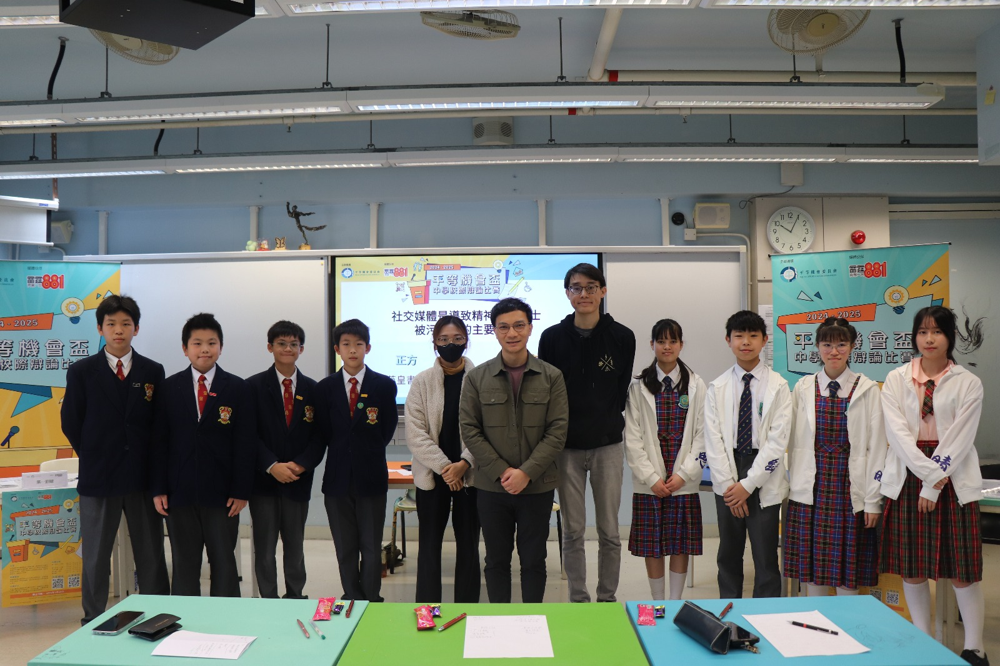
賽後大合照
| 辯題：社交媒體是導致精神復元人士被污名化的主要途徑 |
| 正方：瑪利諾神父教會學校 |
| 反方：聖公會聖三一堂中學 |
| 賽果：1：2，反方聖公會聖三一堂中學勝出 |
| 最佳辯論員：反方第二副辯 林佳宜同學 |
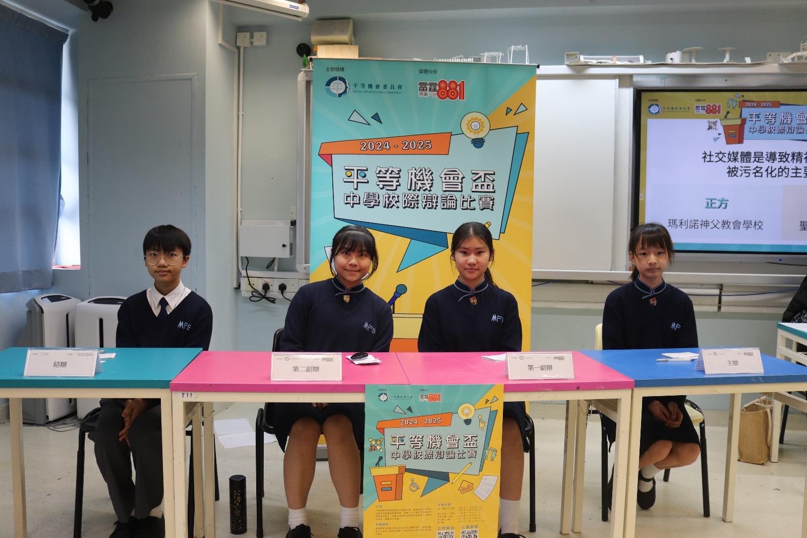
正方：瑪利諾神父教會學校

反方：聖公會聖三一堂中學
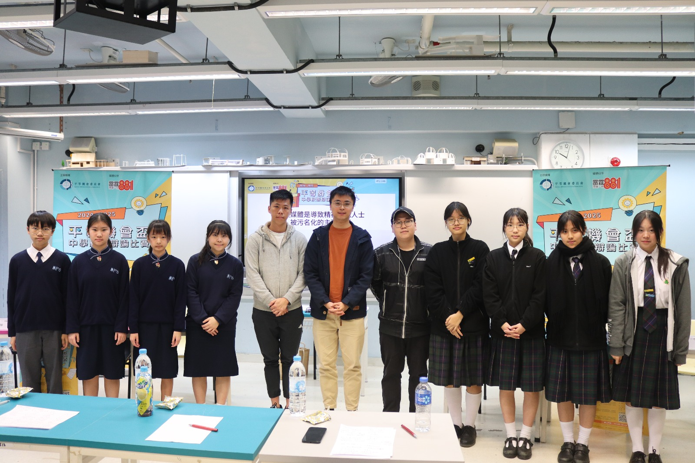
賽後大合照
| 辯題：香港應成立男士事務委員會 |
| 正方：粉嶺禮賢會中學 |
| 反方：林大輝中學 |
| 賽果：3：0，正方粉嶺禮賢會中學勝出 |
| 最佳辯論員：正方結辯 李珈維同學 |

正方：粉嶺禮賢會中學

反方：林大輝中學

賽後大合照
| 辯題：香港應成立男士事務委員會 |
| 正方：香港兆基創意書院 |
| 反方：荃灣官立中學 |
| 賽果：2：1，正方香港兆基創意書院勝出 |
| 最佳辯論員：反方主辯 王予婧同學 |
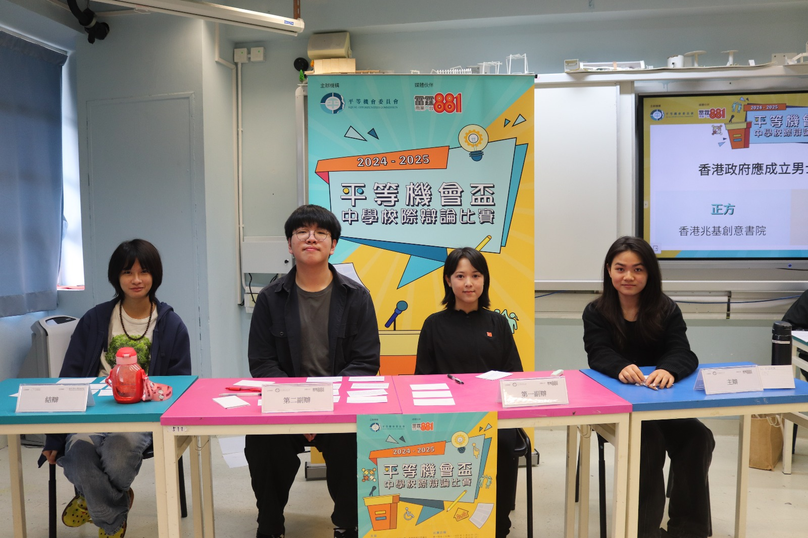
正方：香港兆基創意書院
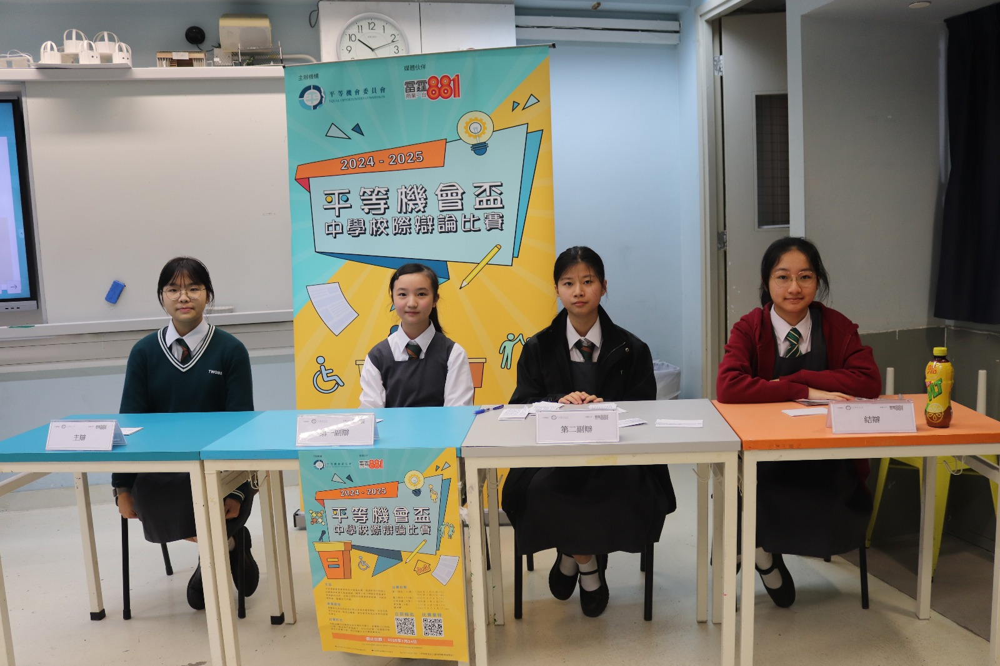
反方：荃灣官立中學

賽後大合照
| 辯題：香港政府應增設「雙職媽媽免稅額」刺激已育婦女重新投入勞動市場 |
| 正方：東華三院吳祥川紀念中學 |
| 反方：聖公會林裘謀中學 |
| 賽果：0：3，反方聖公會林裘謀中學勝出 |
| 最佳辯論員：反方第一副辯 謝穎軒同學 |
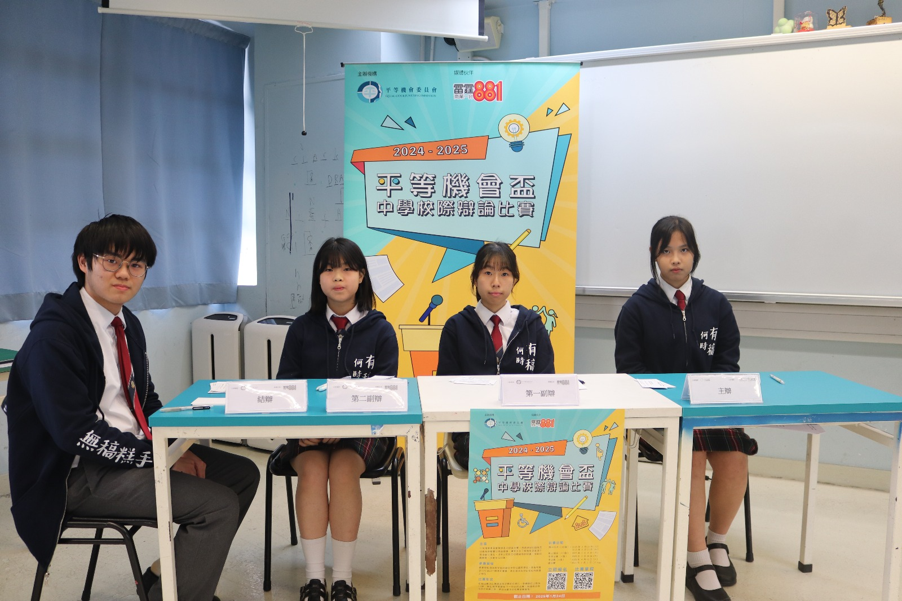
正方：東華三院吳祥川紀念中學
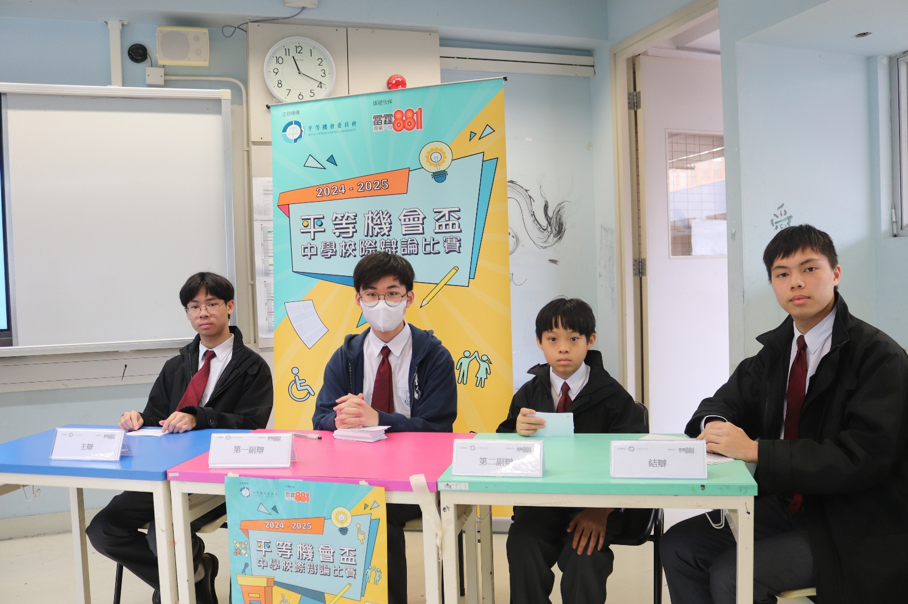
反方：聖公會林裘謀中學
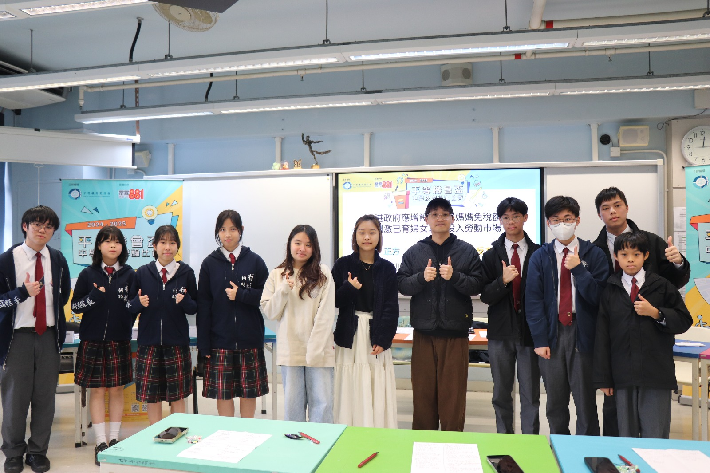
賽後大合照
| 辯題：香港政府應增設「雙職媽媽免稅額」刺激已育婦女重新投入勞動市場 |
| 正方：保良局羅氏基金中學 |
| 反方：聖公會蔡功譜中學 |
| 賽果：3：0，正方保良局羅氏基金中學勝出 |
| 最佳辯論員：正方第一副辯 陳偊充同學 |
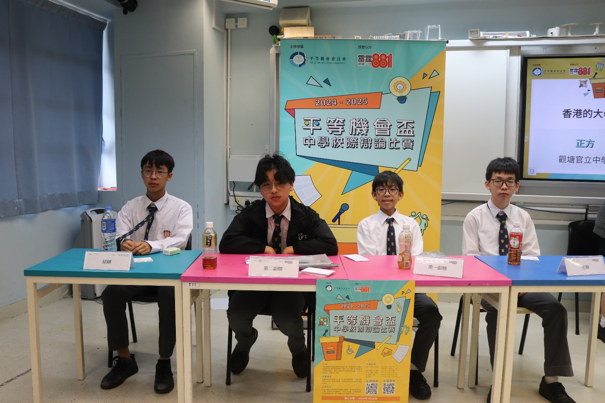
正方：保良局羅氏基金中學

反方：聖公會蔡功譜中學
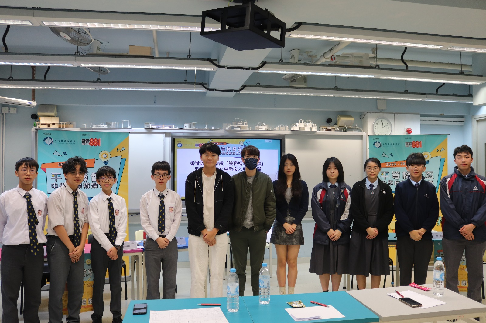
賽後大合照
| 辯題：香港的大學應設立平等機會事務處 |
| 正方：港大同學會書院 |
| 反方：拔萃女書院 |
| 賽果：3：0，正方港大同學會書院勝出 |
| 最佳辯論員：正方結辯 何涴瀠同學 |

正方：港大同學會書院
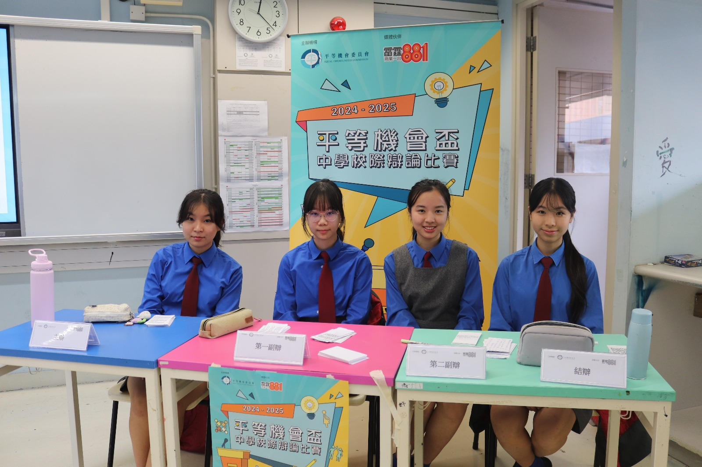
反方：拔萃女書院
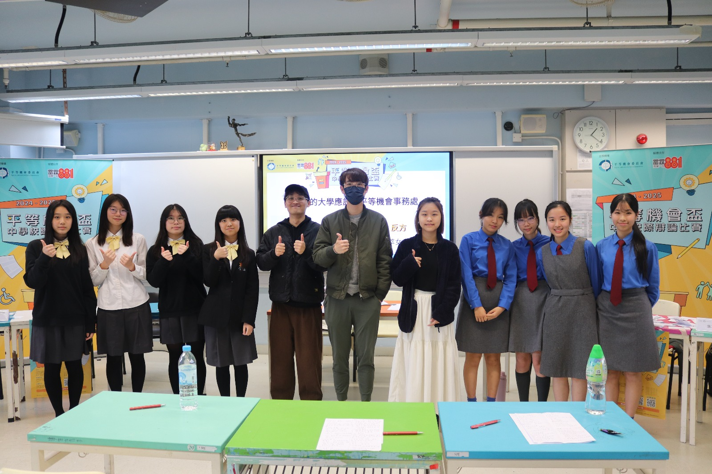
賽後大合照
| 辯題：香港的大學應設立平等機會事務處 |
| 正方：觀塘官立中學 |
| 反方：天水圍循道衞理中學 |
| 賽果：0：3，反方天水圍循道衞理中學勝出 |
| 最佳辯論員：反方第二副辯 梁嘉倩同學 |

正方：觀塘官立中學

反方：天水圍循道衞理中學
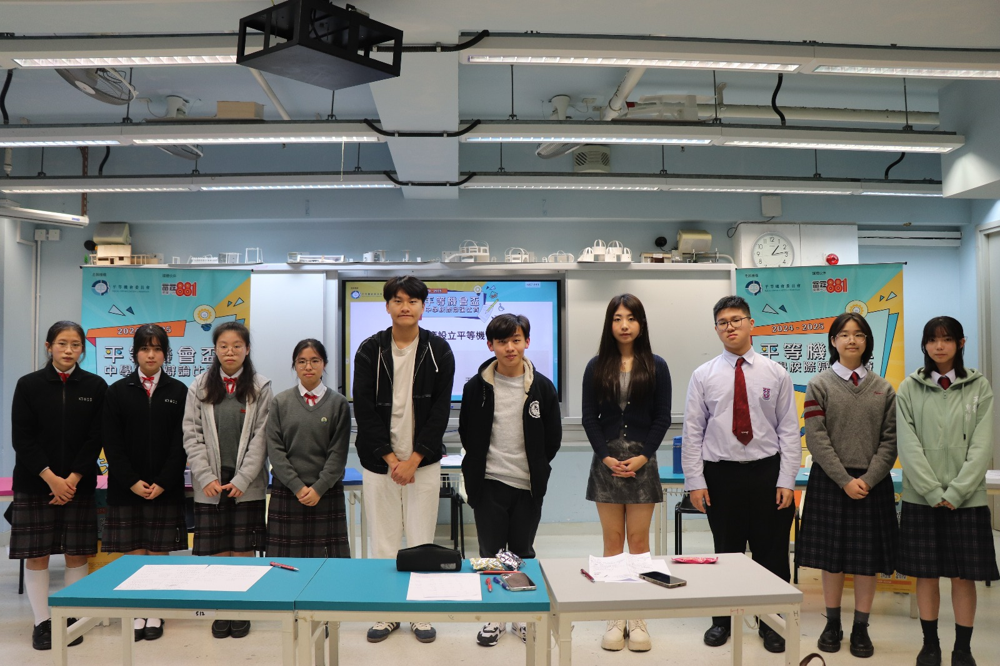
賽後大合照